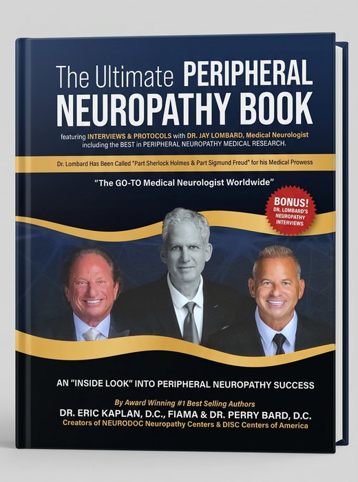

Peripheral neuropathy, taught at a chiropractic university since 2019 and co-taught with a neurologist.
Dr. Kaplan put it simply when they taught it: "Many people that have disc problems have knee problems. Many people that have knee problems have neuropathy." The nerve program is how a disc practice learns to see the rest of that picture.
In May 2019 they taught the Chiropractic Peripheral Neuropathy Certificate at Parker University, described at the time as the first university-based neuropathy CE program. In February 2026 it became the first-ever Peripheral Neuropathy-Spinal Decompression Certificate, taught live at Life University.
Dr. Jay Lombard is a board-certified neurologist and the former chief of neurology at Bronx Lebanon Hospital. He co-teaches the program with Dr. Salvatore LaRusso, past President of the National Board of Chiropractic Examiners.

The book
Interviews and protocols with Dr. Jay Lombard, and contributions from physicians and doctors across the network.
The network
The neuropathy network Dr. Kaplan and Dr. Bard co-founded, with centers including Wellington, Florida, and Queens and Buffalo, New York.
Most doctors treat disc, nerve and knee one at a time. The ones who connect them become the go-to doctor in their market.
See the Triad of Patient Success"It's the greatest profession in the world, but it's not an easy business. So what did Perry and I do? We made it easier."Dr. Eric Kaplan
Saturday, November 21, 2026. Free for chiropractors, based on seat availability. Every request is reviewed.
Request your seat Questions? Call Lacey888-990-9660